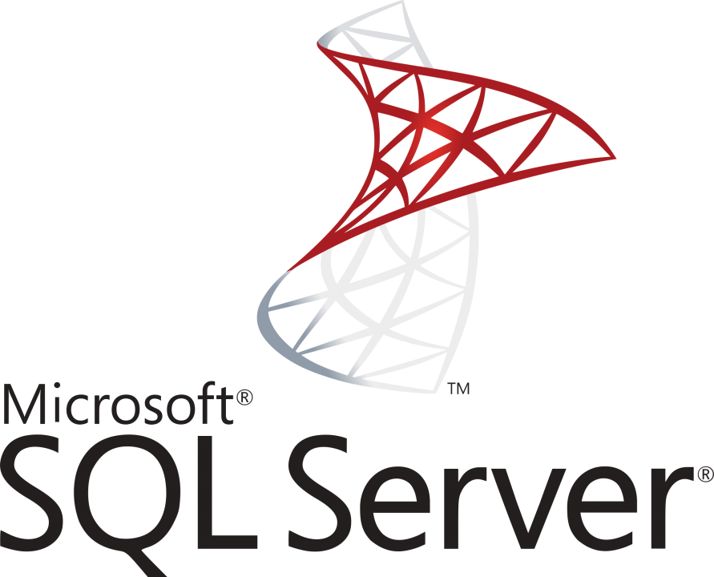

Lenguajes de programación y gestores de bases de datos
C# es uno de los lenguajes más populares de la industria del software. Es el lenguaje de cabecera de Microsoft, aunque se puede usar en múltiples plataformas de desarrollo de aplicaciones de todo tipo.
C# es un lenguaje de tipado estático y multiparadigma, aunque principalmente orientado a objetos. Microsoft presenta actualizaciones muy frecuentes, por lo que resulta bastante evolucionado, ofreciendo herramientas poderosas para los desarrolladores.

Java es un lenguaje de programación y una plataforma informática que fue comercializada por primera vez en 1995 por Sun Microsystems. Hay muchas aplicaciones y sitios web que no funcionarán, probablemente, a menos que tengan Java instalado, y cada día se crean más. Java es rápido, seguro y fiable. Desde ordenadores portátiles hasta centros de datos, desde consolas para juegos hasta computadoras avanzadas, desde teléfonos móviles hasta Internet, Java está en todas partes.

Fue diseñado a mediados de los años 80 por el danés Bjarne Stroustrup. Si intención fue la de extender el lenguaje de programación C (con mucho éxito en ese momento) para que tuviese los mecanismos necesarios para manipular objetos. Por lo tanto C++ contiene los paradigmas de la programación estructurada y orientada a objetos, por lo que se le conoce como un lenguaje de programación multiparadigma.
A C++ primero se le conoció como “C con clases”. Luego se cambió a C++ que significa “incremento de C”, dando a entender que se trata de una extensión del lenguaje de programación C.

MySQL es un sistema de gestión de bases de datos relacional desarrollado bajo licencia dual: Licencia pública general/Licencia comercial por Oracle Corporation y está considerada como la base de datos de código abierto más popular del mundo y una de las más populares en general junto a Oracle y Microsoft SQL Server, todo para entornos de desarrollo web.
MySQL fue inicialmente desarrollado por MySQL AB (empresa fundada por David Axmark, Allan Larsson y Michael Widenius).

Microsoft SQL Server es un sistema de gestión de base de datos relacional, desarrollado por la empresa Microsoft. El lenguaje de desarrollo utilizado (por línea de comandos o mediante la interfaz gráfica de Management Studio) es Transact-SQL (TSQL), una implementación del estándar ANSI del lenguaje SQL, utilizado para manipular y recuperar datos (DML), crear tablas y definir relaciones entre ellas (DDL).

PostgreSQL es un sistema de código abierto empleado para gestionar bases de datos de tipo relacional, aquellas que administran datos relacionados entre sí, esto es, tablas integradas por registros (filas) y campos (columnas) en la que cada registro tiene una única identidad, conocida como clave. Este tipo de bases de datos son hoy en día utilizadas por la mayoría de los desarrolladores para crear sitios web.
PostgreSQL o Postgres nos permite trabajar con ellas (hacer consultas, insertar datos, modificarlos y eliminarlos), ya que cuenta con una gran cantidad de opciones. También ofrece la posibilidad de realizar consultas que no sean relacionales.